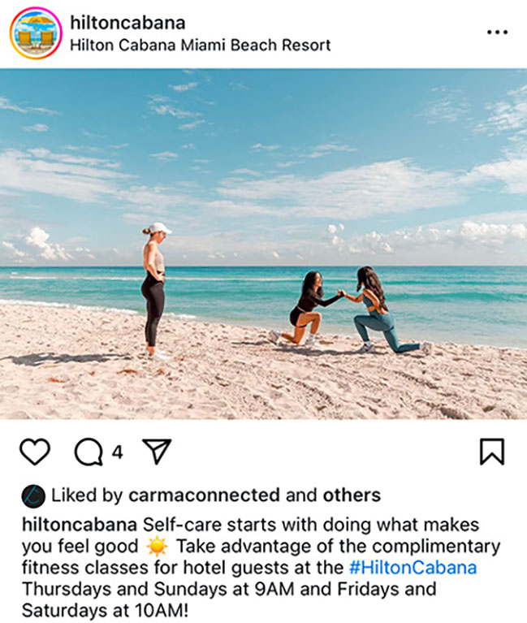

Working with Christian was fantastic. From analytics, social media management, and website design, he was efficient, communicative, and went the extra mile to get the job done.
--Ashley Hajimirsadeghi New Perspectives Theatre Comapny
Past Clients
I am incredibly grateful to have had the opportunity to work with some amazing brands over the course of my academic and professional career


I created content for Carma Connected, a Miami-based PR Agency, and the New Perspectives Theatre Company, a NYC non-profit organization.
My past experience has allowed me to carve out a niche as an expert in entertainment and hospitality spaces.